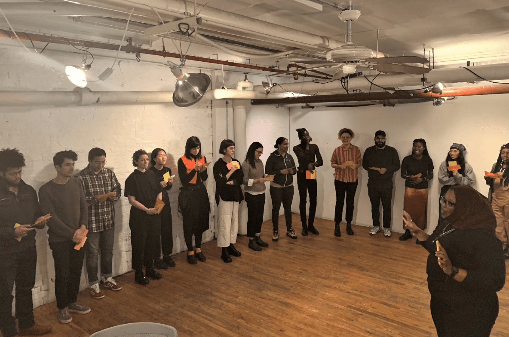
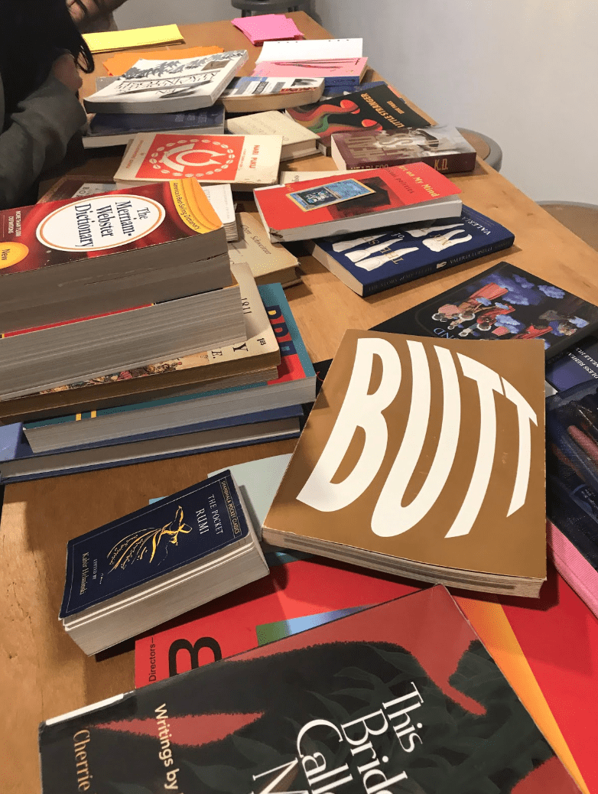
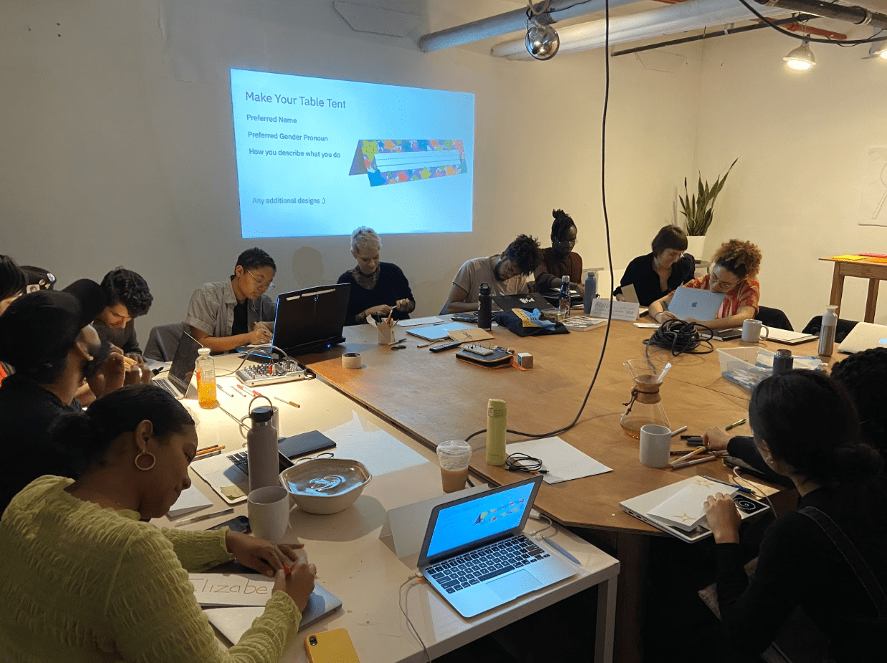
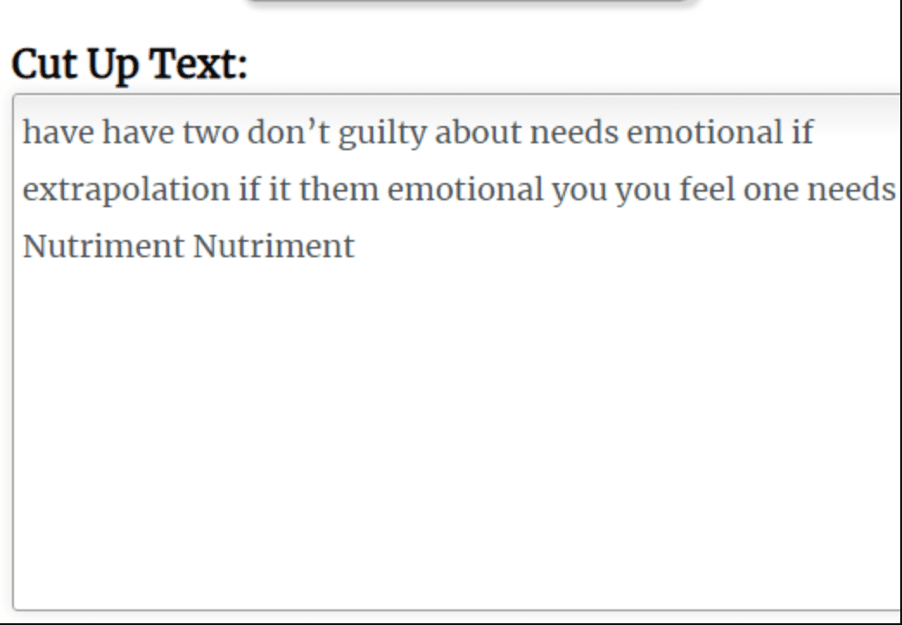
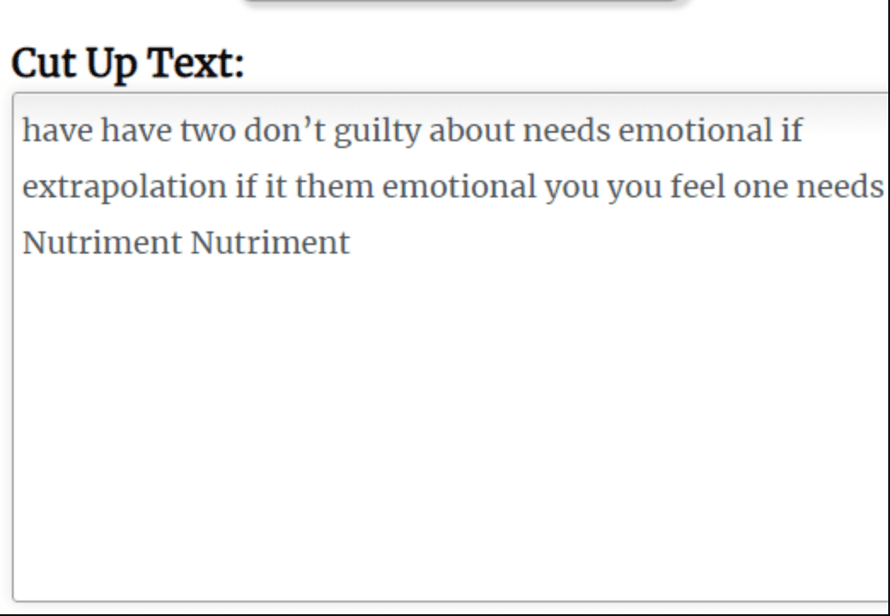
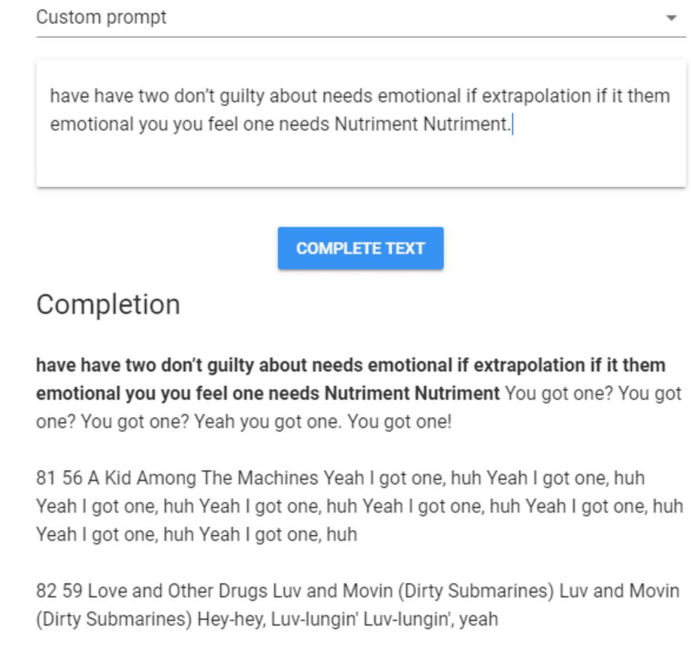

The Unfinished Sentence: Algorithmic Text Generation
by Amber Officer-Narvasa
I am not a complete project and neither are you. In Kameelah Janan Rasheed’s class about algorithmic text generation, we delighted in the unfinished, messy process of existing and playing with words. Kameelah talked about her own interest in the OuLiPo group, who often gave themselves formal constraints when writing in order to produce playful, bizarre text. She also discussed text generation as a way to think about the extensive permutations of Blackness, referencing her Punctuated Blackness series in which she experimented with various ways of exclaiming, stating and framing the word “Black.” Throughout the class we played with various text generators, talking about questions of authorship and ownership that come up when creating narratives in collaboration with machines.
Kameelah leading the class in reading out our algorithmically generated sentences.
Kameelah’s teaching style reminded me why I take such joy in hypertext and associative learning. The kind of freedom involved in following a thread, opening endless tabs, wandering with incidental thoughts, is also a practice of decentering the finished product. Like the OuLiPo and Fluxus artists that she discussed in class, Kameelah encouraged us to prioritize process over completion. During her presentation, Kameelah showed us a quote from Octavia Butler, who had talked about the ways that reading or listening to multiple books at once led to unexpected combinations of ideas, “a kind of...hypertext.”
We brought books that we used for text to put in the generators.
I was interested in the ways that Kameelah’s practice is concerned with the possibilities of iteration. When I took a bookmaking intensive with her in Summer 2018, she discussed her work with Xerox machines as an exploration of obsessive copying, of the permutations and patterns that result when you replicate something to the extreme. This was a concept which was also present in our Code Societies class, where we used text generators to make digital permutations. In providing variations upon a theme, her work can also be seen as a model of contemplation. What happens when you love a word or phrase enough to spend a lifetime teasing out its possibilities? What can you make if you take time to sit with all the things a single word can generate?
Witnessing Kameelah’s work and learning about text generators in class inspired me to keep playing with text, constraint, and algorithmic writing. A few weeks ago, I received an astrological birth chart reading from artist and writer Johanna Hedva. Among many wise and humbling observations about my life, two sentences of Johanna’s advice stood out to me: “Number one: if you have emotional needs, express them. Number two, if you have emotional needs, don’t feel guilty about it.” I felt both dragged and comforted when I heard these words, delivered with a knowing laugh. I clipped this part of Johanna’s audio message and sent it to friends, joking about putting it on loop in a video piece. After class with Kameelah, I decided to put them in a few text generators instead, wondering if they would still hold intimacy and meaning for me after being disassembled by an algorithm. Here’s what I got:
First, I put the sentences in the N+7 machine, where each noun is replaced by the seventh one after it in the dictionary.
![a series of variations on the phrase “Number one: if you have emotional needs, express them. Number two, if you have emotional needs, don’t feel guilty about it.”
N+0.
Number one: if you have emotional needs, express them. Number two, if you have emotional needs, don’t feel guilty about it.
N+1.
Numeral one: if you have emotional needs, expression them. Numeral two, if you have emotional needs, don’t feel guilty about it.
N+2.
Numskull one: if you have emotional needs, expressway them. Numskull two, if you have emotional needs, don’t feel guilty about it.
N+3.
Nun one: if you have emotional needs, expulsion them. Nun two, if you have emotional needs, don’t feel guilty about it.
N+4.
Nunnery one: if you have emotional needs, ex-serviceman them. Nunnery two, if you have emotional needs, don’t feel guilty about it.
N+5.
Nurse one: if you have emotional needs, extension them. Nurse two, if you have emotional needs, don’t feel guilty about it.
N+6.
Nursemaid one: if you have emotional needs, extent them. Nursemaid two, if you have emotional needs, don’t feel guilty about it.](images/2020-the-unfinished-sentence/6.png)
I took the very last result created by the N+7 machine and I put it in the Cut-Up Machine, which lives up to its name.
![a series of variations on the phrase “Number one: if you have emotional needs, express them. Number two, if you have emotional needs, don’t feel guilty about it.”
N+7
Nursery one: if you have emotional needs, exterior them. Nursery two, if you have emotional needs, don’t feel guilty about it.
N+8
Nursing one: if you have emotional needs, exterminator them. Nursing two, if you have emotional needs, don’t feel guilty about it.
N+9
Nurture one: if you have emotional needs, external them. Nurture two, if you have emotional needs, don’t feel guilty about it.
N+10
Nut one: if you have emotional needs, extinguisher them. Nut two, if you have emotional needs, don’t feel guilty about it.
N+11
Nutcase one: if you have emotional needs, extra them. Nutcase two, if you have emotional needs, don’t feel guilty about it.
N+12
Nutcracker one: if you have emotional needs, extract them. Nutcracker two, if you have emotional needs, don’t feel guilty about it.
N+13
Nuthouse one: if you have emotional needs, extraction them. Nuthouse two, if you have emotional needs, don’t feel guilty about it.
N+14
Nutrient one: if you have emotional needs, extractor them. Nutrient two, if you have emotional needs, don’t feel guilty about it.
N+15
Nutriment one: if you have emotional needs, extrapolation them. Nutriment two, if you have emotional needs, don’t feel guilty about it.](images/2020-the-unfinished-sentence/5.png) 

Then, I put the sentence from Cut Up Text in in Talk to Transformer, a text generator run by Open AI.
Johanna’s considered and wry advice had turned into (sometimes) funny, bizarre pieces of text. “Nutriment one: if you have emotional needs, extrapolation them.” It is true, advice can be like nutriment. Emotional needs can lend themselves to extrapolation. I found myself grasping for meaning in even the most scrambled iterations, then reminding myself that play is also a practice of letting go.